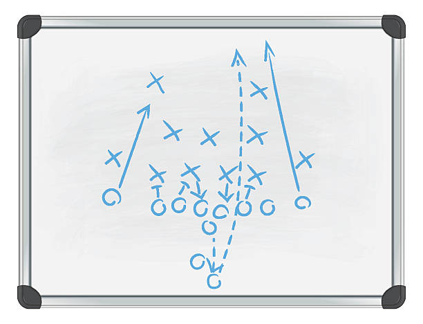

Fantasy Football Expert Advice
Get personalized recommendations for your lineup decisions, trade evaluations, and waiver wire pickups from our expert analysis system.

Advice Categories
- Start/Sit Recommendations
- Trade Analysis
- Waiver Wire Targets
Start/Sit Decisions
Struggling with lineup choices? Our experts analyze matchups, injuries, and trends to help you make the right start/sit decisions each week.
Trade Evaluations
Not sure if a trade offer benefits your team? Get expert analysis on player value and long-term implications.
This Week's Hot Tips
- Start: Players vs. bottom-10 defenses
- Sit: Players in timeshares
- Add: Handcuff RBs for your starters
Advice Success Rate
Our expert recommendations have helped fantasy managers improve their win rate by 23% this season.